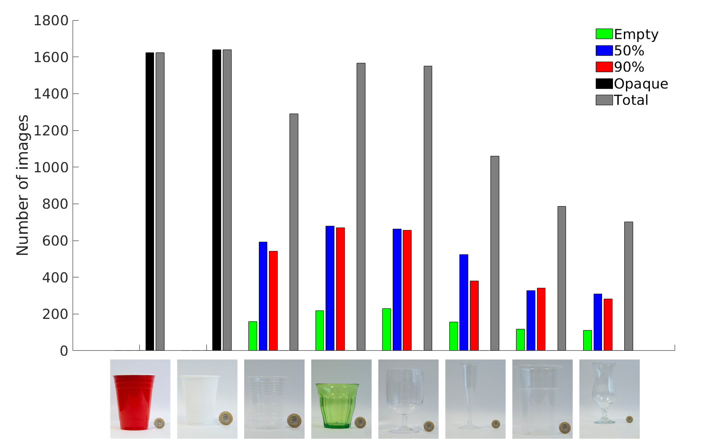

Improving filling level classification with adversarial training
We investigate the problem of classifying -- from a single image -- the level of content in a cup or a drinking glass. This problem is made challenging by several ambiguities caused by transparencies, shape variations and partial occlusions, and by the availability of only small training datasets. In this paper, we tackle this problem with an appropriate strategy for transfer learning. Specifically, we use adversarial training in a generic source dataset and then refine the training with a task-specific dataset.
We also discuss and experimentally evaluate several training strategies and their combination on a range of container types of the CORSMAL Containers Manipulation dataset. We show that transfer learning with adversarial training in the source domain consistently improves the classification accuracy on the test set and limits the overfitting of the classifier to specific features of the training data.

Training strategies
| Training strategy | Description |
|---|---|
| ST (Standard Training) |
common strategy for training a classifier on a train set. |
| AT (Aversarial Training) |
standard training but with images modified with carefully crafted noise, known as adversarial perturbation. |
| ST->FT (Standard Training + Fine-Tuning) |
standard transfer learning strategy that pre-trains the parameters of a classfier on a source domain and then re-fines them on a target domain via fine-tuning. |
| ST->AFT (Standard Training + Adversarial Fine-Tuning) |
transfer learning via fine-tuning using adversarially modified images on the target domain. |
| AT->FT Adversarial Training + Fine-Tuning) |
transfer learning with adversarial training on the source domain. |
| AT->AFT (Adversarial Training + Adversarial Fine-Tuning) |
transfer learning with adversarial training on the source domain and fine-tuning with adversarially modified images on the target domain. |
Note that all strategies using transfer learning (ST-FT, ST->AFT, AT->FT, AT->AFT) are trained on ImageNet as source domain.
Dataset

|
 Statistics |
From the CORSMAL Container Manipulation dataset, we consider the public videos recordings from the three fixed views and capturing cups (4) and drinking glasses (4) as containers. The containers can be transparent, translucent or opaque, while they can be empty or being filled by a person (pouring) up to 50% or 90% of the capacity of the container with transparent (water) or opaque (pasta, rice) content. As the problem is to classify the filling level from a single RGB image, we automatically sampled, followed by manual verification, 10,269 frames of containers for which the pouring process has been finalized (we exclude all frames where a person is still pouring the content).
To increase the variability in the sampled data, we selected frames considering that the object is completely visible or occluded by the person's hand, and under different backgrounds. For each frame, the final image is extracted by cropping only the region with the container using Mask R-CNN followed by manual verification. Each crop is associated to an annotation of filling type and level, hand occlusion, and transparency of the container.
The number of images belonging to the set of red cup, small white cup, small transparent cup, green glass, wine glass, champagne flute, beer cup, and cocktail glass, are 1,623, 1,639, 1,290, 1,566, 1,550, 1,059, 787, and 702, respectively. The number of images are 989 for empty, 3,094 for 50%, 2,871 for 90%, and 3,262 for opaque.
Data splits and results
We split the dataset into train and test sets under three different configurations based on the container type to understand how the container shape might affect the accuracy of a classifier. Our first configuration (S1) considers the champagne flute in the test set to further increase the shape variability of containers not previously seen in the train set. The second configuration (S2) swaps the beer cup with the wine glass to analyze the influence of the stem when presented or not in the train set. The last configuration (S3) places all the containers with a stem in the train set, and now the test set contains only cups with no stem. Note that black lines in the above figure mean that the set of images belonging to that container are part of the train (test) set in the data split. The number of images for each container are shown in parentheses. Note the diversity in shape, color, texture, and transparency, as well as the size compared to the 1-pound coin (GBP) used as reference size.
Related material
Pre-print (arXiv)
Improving filling level classification with adversarial training
A. Modas, A. Xompero, R. Sanchez-Matilla, P. Frossard, and A. Cavallaro
IEEE International Conference on Image Processing (ICIP), Anchorage, Alaska, USA, 19-22 Sep 2021.
Sponsors


Partners